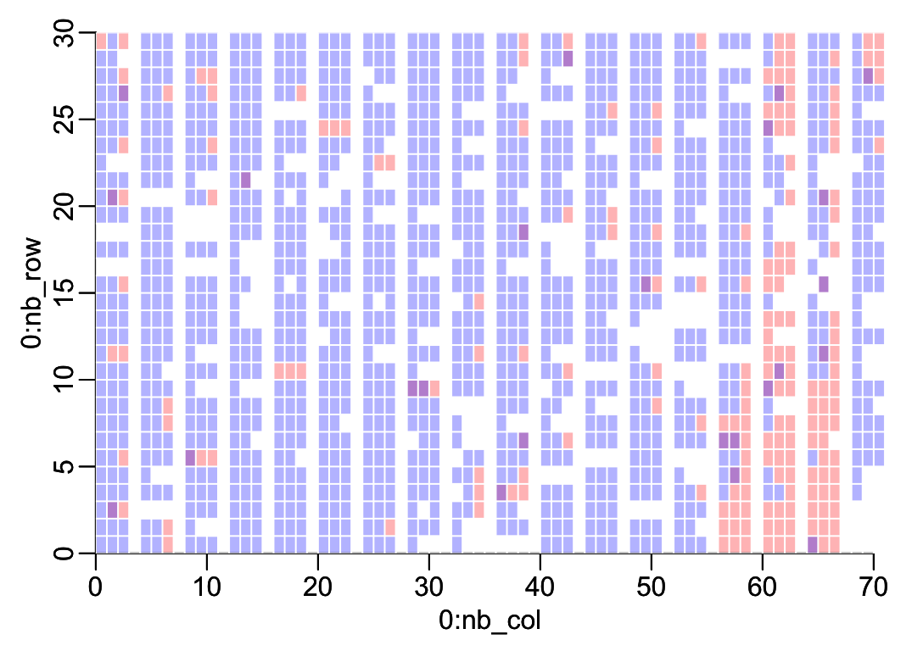

root <- "~/Library/CloudStorage/OneDrive-OxfordUniversityClinicalResearchUnit/"
data_folder <- paste0(root, "GitHub/choisy/08RS/")08RS data
1 Global parameters
The path to the data folder on the local computer:
2 Packages
Required packages:
required <- c("readxl", "purrr", "dplyr", "magrittr", "tidyr")Installing those that are not installed yet:
to_install <- required[! required %in% installed.packages()[,"Package"]]
if (length(to_install)) install.packages(to_install)Loading some packages for interactive use:
library(dplyr)
library(purrr)
library(stringr)
library(tidyr)3 Functions
A tuning of the readxl::read_excel() function:
read_excel2 <- function(file, ...) readxl::read_excel(paste0(data_folder, file), ...)A function that reads all the tabs of an excel file in the data folder data_folder defined above:
read_excel_file <- function(file) {
sheets_names <- readxl::excel_sheets(paste0(data_folder, file))
sheets_names |>
map(~ read_excel2(file, .x)) |>
setNames(sheets_names)
}A function that remove some slots of a list, by names:
remove_slots <- function(lst, slt) {
lst[setdiff(names(lst), slt)]
}A function that extracts some variables of some slots of a list x of data frames:
get_vars <- function(sel, x) {
x |>
magrittr::extract(names(sel)) |>
map2(sel, ~ select(.x, !!!.y))
}The variables in questions are defined in the named list sel of character vectors. The names of this list should be among the names of x and the character vectors of each slots should be among the names of the columns of the data frames in the corresponding slots. A function that renames a column of a data frame:
rename2 <- function(df, newname, oldname) {
df_names <- names(df)
df_names[which(df_names == oldname)] <- newname
setNames(df, df_names)
}A function that splits a data frame into a list of data frames:
split_df <- function(x, n_rows) {
nb_rows <- nrow(x)
split(x, gl(nb_rows %/% n_rows + (nb_rows %% n_rows > 0), n_rows, nb_rows))
}A function that appends a data frame x with n rows of values v:
append_dataframe <- function(x, n = 1, v = 0) {
1:ncol(x) |>
map(~ rep(v, n)) |>
as.data.frame() |>
setNames(names(x)) |>
(\(y) bind_rows(x, y))()
}A function that applies append_dataframe() to the last slot of a list x of data frame so that the number of rows of the data frame in the last slot is equal to the number of rows of the data frame in the first lost:
append_last <- function(x, v = 1) {
nb_slots <- length(x)
nb_rows1 <- nrow(x[[1]])
nb_rows2 <- nrow(x[[nb_slots]])
if (nb_rows2 < nb_rows1) {
x[[nb_slots]] <- append_dataframe(x[[nb_slots]], nb_rows1 - nb_rows2, v)
}
x
}A function that reverses a matrix by row:
rev_matrix_by_row <- function(x) x[nrow(x):1, ]4 CRF data
Loading the data from CliRes:
CRF <- read_excel_file("6-11-2024-CTU08RS_Data.xlsx")The names of the data frames in CliRes and in Saras’ code, with definitions:
# CliRes Saras Definition
# ------------------------------------------------------------------
# ENROL data_EN enrollment
# HIST data_HIST history at enrollment
# CONHIST CONHIST contact history at enrollment
# EXAM data_EX symptoms and signs at enrollment
# LAB data_LAB lab results at admission
# NEU data_NEU neurological exam
# DAILY data_Daily daily review
# MED data_MED medications
# DEVSOCSED data_DEV development and socio-economic data
# DISC data_DISC discharge summary
# FUP data_FUP first follow-up day 7-10
# FUP_II data_FUP6m first follow-up month 6
# FUP_III data_FUP18m first follow-up month 18
# NEURO data_NEURO neurological assessment
# ABC data_MABC movement ABC-2The CRF dictionary:
CRF_dict <- list(
devsocsed = list(MomEdu = c("Never been to school",
"Attended some primary school",
"Completed primary school (5th gr)",
"Completed lower secondary school (9th gr)",
"Completed higher secondary school (12th gr)",
"Completed university/college degree",
"Completed postgraduate degree"),
Toilet = c("Own flush toilet",
"Shared flush toilet",
"Traditional pit toilet",
"Ventilation improved pit toilet",
"No facility/bush/field",
"None of above"),
Water = c("Private tap",
"Public standpipe",
"Bottled water",
"Well in own residence",
"Public well",
"Rain water",
"Spring",
"River/lake/pond", NA,
"None of the above")),
disc = list(GradeHFMD = c("grade 1",
"grade 2a",
"grade 2b(1)",
"grade 2b(2)",
"grade 3",
"grade 4",
"Not Applicable"),
Outcome = c("Full recovery without complication",
"Incomplete recovery",
"Transferred to another hospital",
"Taken home without approval",
"Death",
"Discharged to die")))Selection of variables from the CRF:
selection <- list(ENROL = c("ParNo", "DateEnrol", "Gender", "DateBirth"),
HIST = c("ParNo", "DateIllness", "DateAdmHTD", "DateAdmHTD",
"DateAdmHosp", "HFMDToday", "HFMDAdmitted"),
EXAM = c("ParNo", "headCircumference", "height", "weigh"),
DEVSOCSED = c("ParNo", "MomEdu", "Toilet", "Refrigerator",
"AirConditioner", "Motorbike", "Water"),
DISC = c("ParNo", "DateDisc", "GradeHFMD", "TreatSepsis",
"Outcome", "Seizure", "Hypertonicity", "LimbPara",
"CNP", "DiapWeak", "Trache", "Nasotube",
"BehaveChange"))5 PCR data
PCR <- "03EI-08RS PCR-Seq result.xlsx" |>
read_excel2("08RS") |>
select(ID, `OUCRU RESULT`) |>
mutate(across(ID, as.numeric)) |>
na.exclude()6 Children data
The case and control groups:
groups <- c(rep("HFMD", 299), rep("control", 200),
rep("HFMD", 200), rep("control", 299))First recoding of variables:
recoding1 <- function(x) {
x |>
mutate(across(Gender, ~ c("male", "female")[.x]),
across(starts_with("Date"), as.Date),
across(c("Refrigerator", "AirConditioner",
"Motorbike", "TreatSepsis"), ~ .x < 2))
}Second recoding of variables:
recoding2 <- function(x) {
x |>
mutate(across(HFMD, ~ CRF_dict$disc$GradeHFMD[.x]),
across(MomEdu, ~ CRF_dict$devsocsed$MomEdu[.x]),
across(Toilet, ~ CRF_dict$devsocsed$Toilet[.x]),
across(Water, ~ CRF_dict$devsocsed$Water[.x]),
across(Outcome, ~ CRF_dict$disc$Outcome[.x]))
}Selecting, recoding the variables from the CRF, and assigning to case or control:
children <- selection |>
remove_slots("ABC") |>
get_vars(CRF) |>
reduce(left_join, by = "ParNo") |>
rowwise() |>
mutate(HFMD = max(across(c(HFMDToday, HFMDAdmitted, GradeHFMD)))) |> #takes max grade
ungroup() |>
recoding1() |>
recoding2() |>
mutate(ID = as.numeric(str_remove(ParNo, "^.*-")),
group = groups[ID]) |>
left_join(PCR, "ID") |>
rename(PCR = `OUCRU RESULT`) |>
select(-HFMDToday, -HFMDAdmitted, -GradeHFMD, -ID) |>
select(ParNo, Gender, DateBirth, DateIllness, DateAdmHosp,
DateAdmHTD, DateEnrol, DateDisc, everything()) |>
arrange(ParNo)Note: the date of discharge is missing for many children:
children |>
select(ParNo, DateEnrol, DateDisc) |>
filter(is.na(DateDisc))# A tibble: 303 × 3
ParNo DateEnrol DateDisc
<chr> <date> <date>
1 03-043 2014-07-17 NA
2 03-053 2014-09-18 NA
3 03-054 2014-09-19 NA
4 03-055 2014-09-29 NA
5 03-056 2014-10-02 NA
6 03-060 2014-10-24 NA
7 03-062 2014-10-27 NA
8 03-078 2014-12-15 NA
9 03-079 2014-12-29 NA
10 03-300 2014-01-07 NA
# ℹ 293 more rows7 M-ABC data
ABC <- CRF$ABC |>
select(ParNo, DateTested, ends_with("ISS")) |>
mutate(across(starts_with("Date"), as.Date)) |>
arrange(ParNo, DateTested)Of note, here
MDstands for manual dexterity,ACstands for aiming and catching andBALstands for balance.
ABC |>
na.exclude()# A tibble: 221 × 10
ParNo DateTested MD1ISS MD2ISS MD3ISS AC1ISS AC2ISS BAL1ISS BAL2ISS BAL3ISS
<chr> <date> <dbl> <dbl> <dbl> <dbl> <dbl> <dbl> <dbl> <dbl>
1 03-001 2013-06-21 4 8 0 0 0 0 0 0
2 03-001 2014-12-17 3 10 6 11 6 6 7 1
3 03-001 2015-06-30 5 12 1 9 10 3 1 1
4 03-003 2015-01-15 11 14 13 12 14 14 13 12
5 03-004 2015-01-20 14 16 1 9 6 7 7 6
6 03-007 2015-02-02 9 10 5 8 12 10 11 6
7 03-010 2014-03-20 6 11 1 7 11 6 13 6
8 03-010 2015-03-20 12 12 6 11 12 8 13 4
9 03-016 2015-04-07 8 14 12 12 12 9 13 5
10 03-020 2014-06-24 11 13 10 12 11 9 13 12
# ℹ 211 more rows8 Bayley data
Loading the data from CliRes:
Bayley0 <- read_excel_file("12-9-2025-Bayley_v3_P1_Data.xlsx")The tabs that we are interested in are the following:
- CS: cognitive scale
- RC: receptive communication (language scale)
- EC: expressive communication (language scale)
- FM: fine motor (motor scale)
- GM: gross motor (motor scale)
Bayley_tabs <- c("CS", "RC", "EC", "FM", "GM")Let’s generate the data frame from these tabs:
common_variables1 <- c("PARNO", "DATETESTED")
common_variables2 <- c(common_variables1, "SCALESCORE")
Bayley<- Bayley_tabs |>
map(~ c(common_variables2, .x)) |>
setNames(Bayley_tabs) |>
get_vars(Bayley0) |>
map2(paste0("SCALESCORE_", Bayley_tabs), rename2, "SCALESCORE") |>
reduce(left_join, by = c("PARNO", "DATETESTED")) |>
mutate(across(starts_with("DATE"), as.Date)) |>
rename(ParNo = PARNO) |>
mutate(across(ParNo, ~ stringr::str_remove(.x, "08RS_")))9 Saras’ CSV file
saras <- readr::read_csv(paste0(root, "GitHub/choisy/08RS/complete data including all withdrawals_updated26_3_21.csv"))New names:
Rows: 1408 Columns: 77
── Column specification
──────────────────────────────────────────────────────── Delimiter: "," chr
(27): group, EnrolGrade, AdmissionGrade, stunt, waste, MomEdu, Toilet, ... dbl
(37): ...1, code, Gender, dayIllatADM, WEIGHT, HEIGHT, headCircumferenc... lgl
(2): DiapWeak, BehaveChange date (11): DateofEnrol, DateBirth.CRF, DateIllness,
DateAdmHTD, DateAdmHosp,...
ℹ Use `spec()` to retrieve the full column specification for this data. ℹ
Specify the column types or set `show_col_types = FALSE` to quiet this message.
• `` -> `...1`select(saras, waste, visitM, ddifENB, ddifEN, FUP, FUP1)# A tibble: 1,408 × 6
waste visitM ddifENB ddifEN FUP FUP1
<chr> <dbl> <dbl> <dbl> <chr> <chr>
1 Not Wasted 2 NA 547 18m 18m
2 Not Wasted NA 184 NA 6m <NA>
3 Not Wasted 1 NA 3 ENROL ENROL
4 Not Wasted 2 NA 547 18m 18m
5 Not Wasted 1 182 182 6m 6m
6 Not Wasted NA 11 NA ENROL <NA>
7 Not Wasted NA 567 NA 18m <NA>
8 Not Wasted NA 204 NA 6m <NA>
9 Not Wasted NA 14 NA ENROL <NA>
10 Not Wasted NA 16 NA prem <NA>
# ℹ 1,398 more rowstable(saras$waste)
Not Wasted Waste
1350 43 10 Time points
A function that generates the time points:
make_time_points <- function(x) {
children |>
select(ParNo, DateEnrol, DateDisc) |>
left_join(x, "ParNo") |>
mutate(time_diff = DateTested - DateEnrol,
time1 = 0, time2 = 6, time3 = 18, # in months
across(c(time1, time2, time3), ~ as.numeric(abs(time_diff - 30 * .x)))) |>
rowwise() |>
mutate(min_delay = min(across(c(time1, time2, time3)))) |>
ungroup() |>
mutate(time_point = ifelse(min_delay == time1,
"enrollment", ifelse(min_delay == time2,
"6 months", "18 months")))
}A function that gets the IDs of children with duplicated assessments:
get_IDs_with_duplicated <- function(x) {
x |>
filter(! is.na(time_point)) |>
group_by(ParNo) |>
group_modify(~ .x |>
group_by(time_point) |>
tally()) |>
ungroup() |>
filter(n > 1) |>
pull(ParNo) |>
unique()
}A function that uses the previous two to generate the data with duplicated assessments:
show_duplicated_assessments <- function(x) {
data_with_time_points <- make_time_points(x)
IDs_with_duplicates <- get_IDs_with_duplicated(data_with_time_points)
filter(data_with_time_points, ParNo %in% IDs_with_duplicates)
}10.1 M-ABC data
ABC |>
show_duplicated_assessments() |>
writexl::write_xlsx("M-ABC2.xlsx")Here all the duplicates are complete. We’ll simply keep all the earlier ones:
ABC2 <- ABC |>
make_time_points() |>
arrange(ParNo, time_point, min_delay) |>
group_by(ParNo, time_point) |>
group_modify(~ head(.x, 1)) |>
ungroup() |>
select(-DateEnrol, -DateDisc, -min_delay, - time_diff, -time1, -time2, -time3) |>
rename(Date_ABC = DateTested)10.2 Bayley data
Bayley <- rename(Bayley, DateTested = DATETESTED)
Bayley |>
show_duplicated_assessments() |>
writexl::write_xlsx("Bayley2.xlsx")This shows that
- there is one and only one complete measurement per time point
- the complete measurement is always the earlier one, except for patient
03-514
In consequence, we decide to simply filter out all the incomplete duplicates:
Bayley2 <- Bayley |>
make_time_points() |>
group_by(ParNo, time_point) |>
group_modify(~ {if (nrow(.x) > 1) return(na.exclude(.x)); .x }) |>
ungroup() |>
select(-DateEnrol, -DateDisc, -min_delay, - time_diff, -time1, -time2, -time3) |>
rename(Date_Bayley = DateTested)10.3 Merging
followups <- full_join(ABC2, Bayley2, c("ParNo", "time_point"))10.4 Visualization
intercalate <- function(x) {
nb <- length(x)
last_slot <- x[[nb]]
x[-nb] |>
map(~ mutate(.x, a = 1)) |>
c(list(last_slot))
}side_by_side <- function(x, n) {
x |>
select(-ParNo) |>
split_df(n) |>
append_last() |>
intercalate() |>
reduce(cbind) |>
as.matrix()
}image2 <- function(x, col_no, col_yes) {
nb_col <- ncol(x)
nb_row <- nrow(x)
x |>
rev_matrix_by_row() |>
t() |>
image(x = 0:nb_col, y = 0:nb_row, z = _, axes = T, col = c(col_no, col_yes))
}templated <- expand_grid(ParNo = unique(followups$ParNo),
time_point = c("enrollment", "6 months", "18 months")) |>
left_join(followups, c("ParNo", "time_point")) |>
select(ParNo, time_point, starts_with("Date")) |>
mutate(across(starts_with("Date"), ~ as.numeric(! is.na(.x)) + 1))transparent <- adjustcolor("white", 0)
adjustcolor2 <- function(col) adjustcolor(col, .3)
templated |>
select(-Date_Bayley) |>
pivot_wider(names_from = time_point, values_from = Date_ABC) |>
side_by_side(30) |>
image2(transparent, adjustcolor2("red"))
par(new = TRUE)
templated |>
select(-Date_ABC) |>
pivot_wider(names_from = time_point, values_from = Date_Bayley) |>
side_by_side(30) |>
image2(transparent, adjustcolor2("blue"))
abline(v = 0:71, col = "white")
abline(h = 0:30, col = "white")